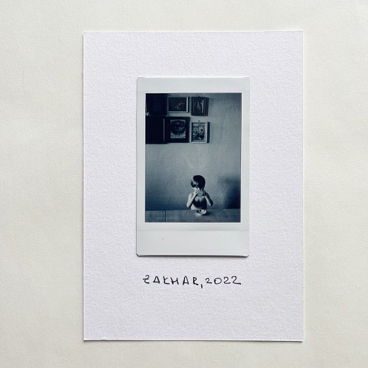
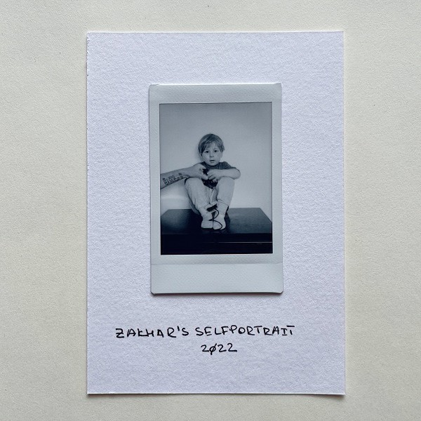

Фоновый шум
Оказалось, что уже несколько версий iOS умеет генерить разный фоновый шум:

Спрятано это все в Settings → Accessibility → Audio/Visual → Background Sounds.
Я по этому поводу запилил шорткат, который умеет включать этот шум на указанное время (про "шорткаты" или "команды" можно прочитать тут).
Включаю его перед сном или когда хочу чтобы ничего не отвлекало.
Заодно выяснилось, что шорткаты в iOS не идеальны)
Голод
Обращение за помощью было отправлено всем, и многие люди из этой страны, и других стран, ответили на зов о помощи и были очень щедры. Но многие другие хотели узнать, кто виноват — засуха или политическая система? Чем же эти вопросы могут смягчить ужасные страдания? Какой смысл они имеют для тех, кто умирает от голода?
Все политики мира, за исключением Соединенных Штатов, пытались найти предлог, для того, чтобы ничего не предпринимать и обвиняли во всем самих русских.
Говорю вам: в мире что-то сгнило, но еще есть возможность это исправить. — Фритьоф Нансен
Отец, 2020

Отцу сегодня 85.
Захар, 2022

Пока мы жили в Невшехире, я снял несколько своих автопортретов, а Захар, увидев это, решил снять себя. Только самостоятельно сжать грушу у него не получилось, так что пришлось помочь.
Сандармох, 2022

В урочище Сандармох в 1937-1938 годах был тайно убит и захоронен 6241 человек.
Я побывал в этом месте в августе 2022 года.
Колмановский, 2022
Финализируют цитатой из нобелевской речи Сахарова:
Глубокоуважаемые дамы и господа!
Мир, прогресс, права человека - эти три цели неразрывно связаны, нельзя достигнуть какой-либо одной из них, пренебрегая другими...
Я убежден также, что свобода убеждений, наряду с другими гражданскими свободами, является основой научно-технического прогресса и гарантией от использования его достижений во вред человечеству.
Abandoned car, 2022

В Тайланде природа забирает свое назад очень быстро.
Мысли Захара

Несмотря на то, что они выглядят, как список задач, это все же его "мысли")
The fragment of a dead tree, 2022

Продолжаю эксперименты с форматом. Снимаю на Ляйку, проявляю, сканирую и печатаю на бумаге Instax.